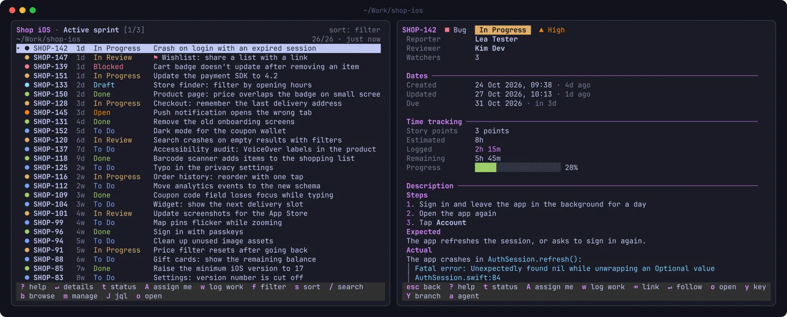

Jira Lightherdr-jira-light
A lightweight Jira pane. Its filters follow the working directory of the tab it sits in: each project gets its own boards and sprints, and switching tabs or directories switches the list.
- b browses projects, boards, sprints and the backlog; p pins what you picked to a directory.
- Issue details with every field, the description rendered, and sub-tasks, links and comments you can follow.
- t moves an issue, A assigns it to you, w logs work. It changes Jira only when you ask.
- Works with Jira Server, Data Center and Jira Cloud.
curl -fsSL https://raw.githubusercontent.com/ChristianDeckert/herdr-jira-light/main/install.sh | shNeeds herdr 0.9.4 or later, zsh, curl and jq on macOS or Linux. MIT license.
